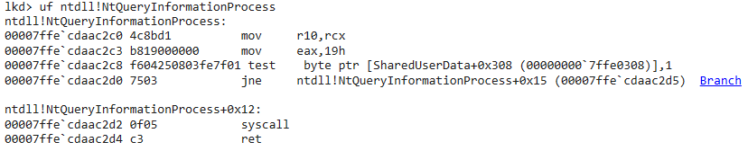

# Finding syscall values
Syscall values can and do change between versions of Windows.
You can find the syscall values for the version you're currently working on yourself using WinDBG,
or you can grab them from the internet.
## j00ru
j00ru keeps an updated list for all versions:
https://j00ru.vexillium.org/syscalls/nt/64/## WinDbg
Load Ntdll.dll if it's not already:
.reload Ntdll.dllAnd inspect the function you want:
uf ntdll!Functionuf ntdll!NtCreateFileWhichever value is being moved into EAX is the function's syscall value.
## Retrieve syscalls from Ntdll.dll on disk
BE DYNAMIC.
Refer here:
Syscalls > Retrieve syscalls from Disk